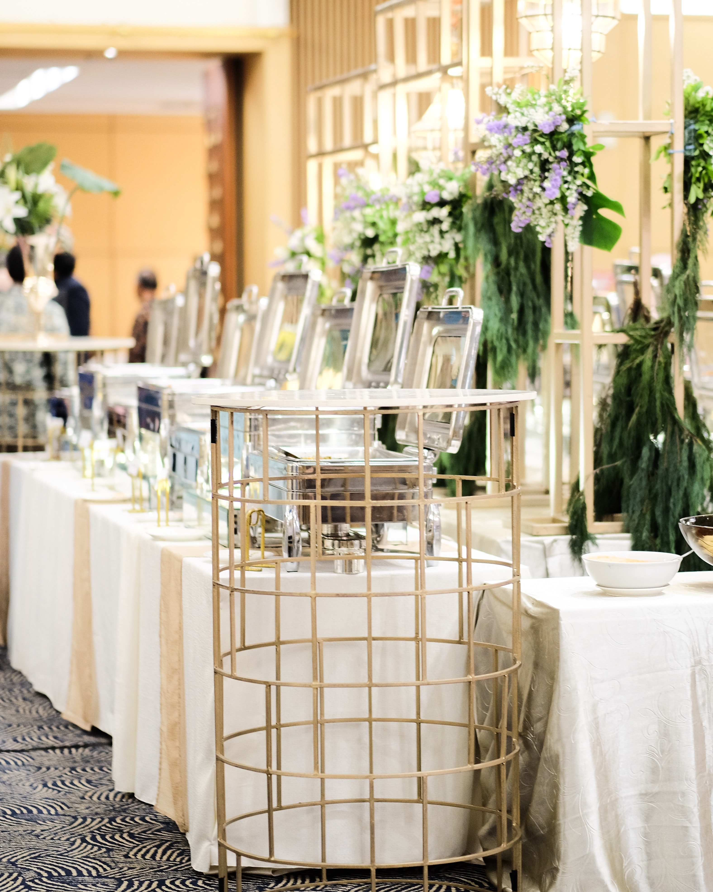

Weekly Meal Planning
RATE IS #200,000
we can make a meal plan for you by telling us your
• schedule-Before we plan which recipes we’ll be cooking for you , we need to figure out the time of you eat. This will help us determine which style of recipe we will choose for your meal plan.
• recipes-based on your schedule, you may need a specific style of recipe. Perhaps a slow cooker recipe that you can have simmering away as you do housework on your day off? Maybe you’re looking for something that makes great leftovers so you can cook once ,eat all week? Do you need a one pot meal to keep cleanup fast and easy? Fear not , for somtss cook has got you covered. you can also help us make a list of recipes that you can use in your meal plan(s) based on these factors.
We can also help you make a grocery list , This is probably the step where most people say, “nuh-uh” and go back to spending thousands on take out. BUT this is where the magic happens and where you’ll save the most money. Here’s how it works…
1.) we will go through each recipe on your plan and write down every ingredient and the quantity needed.
2.) we will help take the list to your kitchen and cross check it with what’s in your pantry and fridge.
3.) we will go through item by item and cross off everything you already have on hand.
4.)Everything that remains on the list after we cross check your pantry is your final grocery list


Cooking Classes
RATE IS #500,000 per person
Are you new to cooking? Or do you feel like you want to gain confidence and start with the basics? Cooking is an essential life skill that can be learnt any stage in life. Whether your just embarking on cooking for yourself or a young adult transforming into a budding chef, we’ll teach you how to cook with confidence. The class is entirely hands on and taught in small groups, so you develop and practice with guidance from our expert chefs and produce your own meals that you can share with your family and friends. You will learn fundamental skills such as chopping, slicing and dicing, get to know your brunoise to your batons and confidently use knives to make cooking easy. You will make a number of delicious yet simple dishes to create a selection of recipes you can use on a weekly basis. You will be cooking with a variety of meats, vegetables, pulses and grains to broaden your experience of all food types and flavours. You will learn a range of techniques, such as boiling, poaching, frying, roasting and steaming. You will learn to cook perfect rice in 10 minutes – steamed, boiled or stir-fried. This class is suitable for vegetarians, vegans and those with gluten intolerance. You’ll learn to cook a wide range of exciting dishes using fresh easy-to-buy ingredients with great nutritional value. You’ll also discover the many medicinal benefits of herbs and spices.
1.)Usually 6-8 people per class
2.)Includes lunch (cooked by you!) and wine, beer or soft drinks
3.)All the ingredients and equipment is provided, all you need to provide is yourself!
4.)Suitable for both those new to cooking or have some experience , it's also suitable for vegetarian, vegan or other dietary needs.
Event catering
RATE IS #1,500,000 above (depends on the amount of people we are cooking for)
A good place to start planning for an event is to understand the different types of catering options available to you. The reason being that each type has a different type of planning, pricing, and ordering procedure. Narrowing down to one of these choices will not only save you time and money, but will help you simplify the menu choices and the type of services that you will need.
1. Wedding Catering - a wedding is one of the most important events in a couple’s lives. Unlike corporate catering, wedding catering is no casual affair. It requires some significant attention to detail and timing as well as clear communication with all members of the wedding crew, including the DJ, bride and groom, vendors and photographers. Wedding catering is much more than cooking and serving food. we can cater as a full-service wedding caterer i.e we will be responsible for some décor, table arrangements, and food presentation. we also take into consideration themes and fantasies and accommodate for food allergies and dietary restrictions. More importantly, we coordinate rentals like linen and serve ware as well as staffing. we can also cater for a first-class wedding caterer ,i.e we will take over the logistical planning so that the couple and their guests can enjoy a stress-free day.
2.Social event catering-Social event functions are more intimate affairs and require greater attention to detail by the caterer. The category encompasses special events such as birthday parties, retirement celebrations, grand openings, housewarming parties, and bridal and baby showers. Appetizers, décor, bartenders, and servers are some of what may be included in social event catering packages. Due to their small nature, social event catering menus differ from party to party. That’s because the clients’ dietary needs, allergens, preferences and cultural beliefs have to be considered to make the event successful.
We also cater for any type of events.
